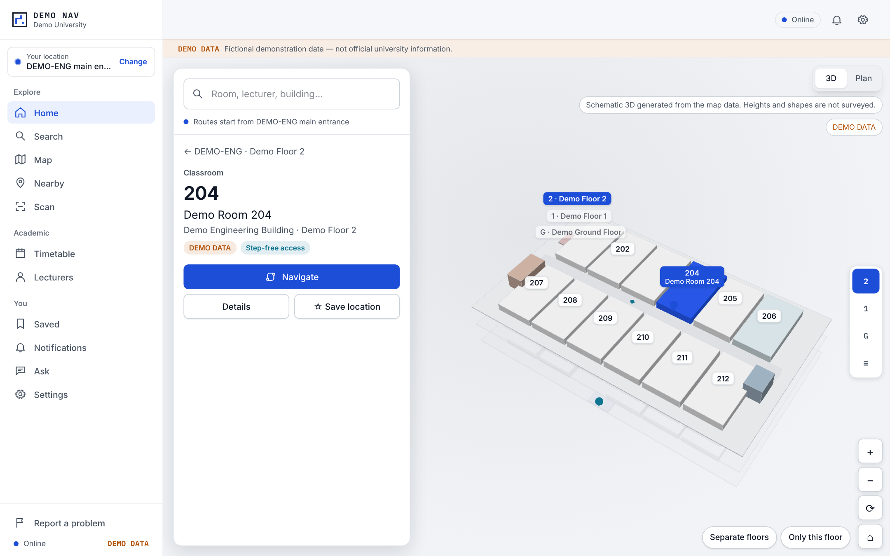
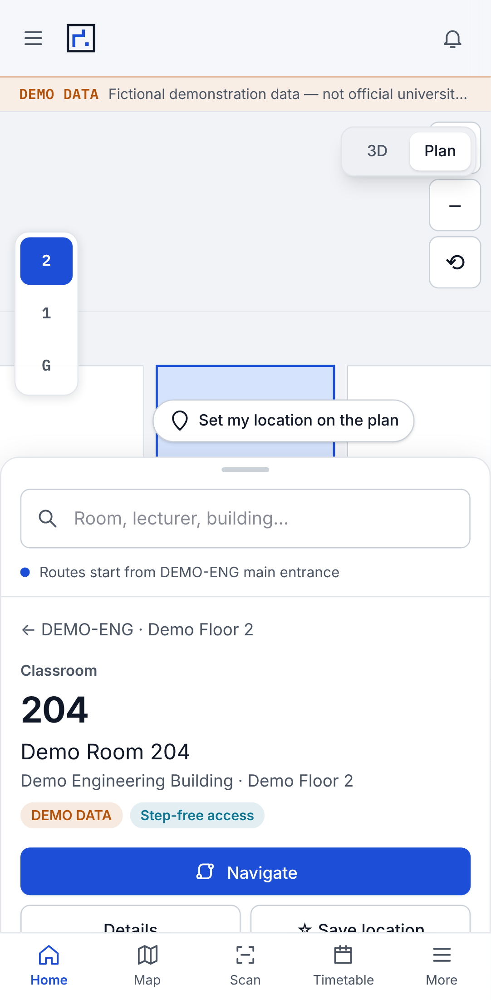
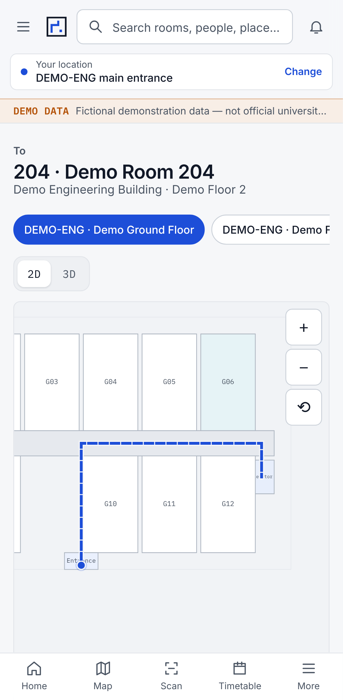
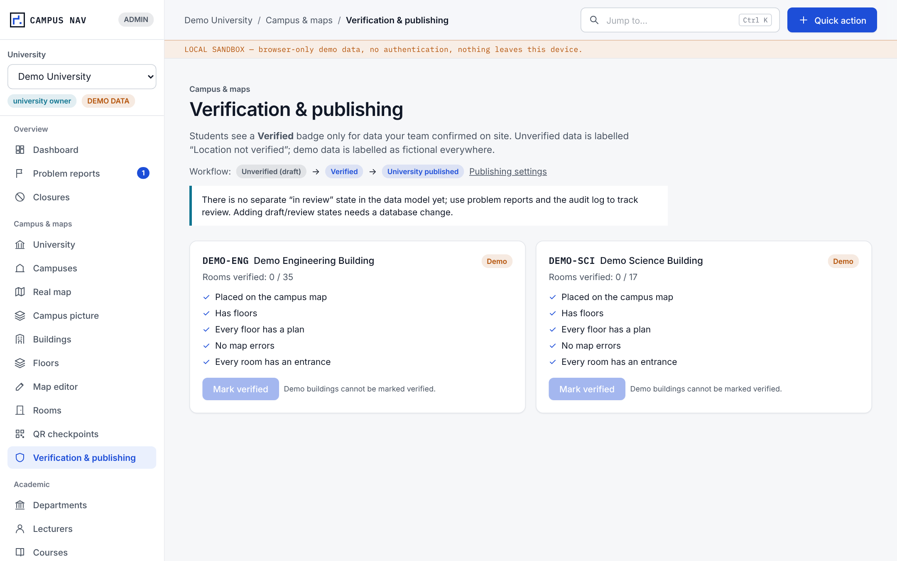
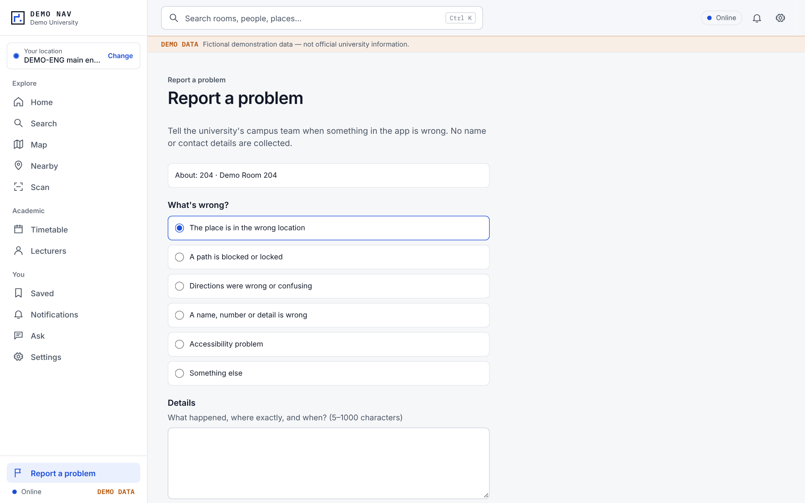
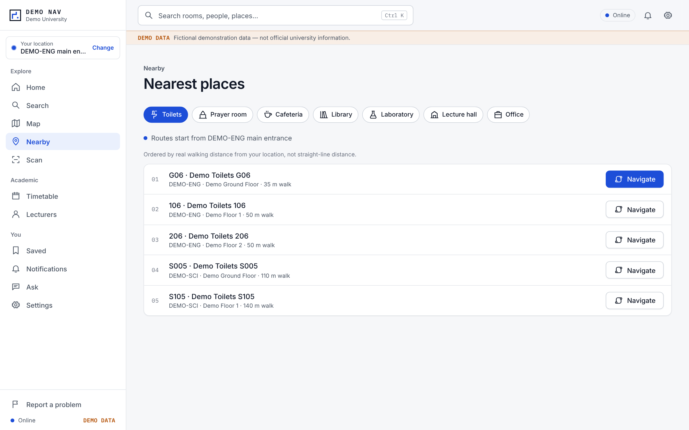

پێشنیارێک بۆ ئەوەی هەموو قوتابی، مامۆستا و میوانێک بە ئاسانی هەر بینا، ژوور یان ئۆفیسێک بدۆزێتەوە — لەسەر مۆبایلەکەی، بە کوردی، عەرەبی یان ئینگلیزی، تەنانەت بەبێ ئینتەرنێتیش.

قوتابییە نوێیەکان، میوانان و تەنانەت فەرمانبەرانیش ڕۆژانە کاتێکی زۆر بەفیڕۆ دەدەن بۆ دۆزینەوەی هۆڵی وانە، ئۆفیس و خزمەتگوزارییەکان. SUL NAV ئەپێکی نەخشە و ڕێبەری کەمپەسە کە پێت دەڵێت شوێنەکان لە کوێن و چۆن هەنگاو بە هەنگاو بە پێ بگەیتە ئەوێ، لە ناو بیناکان و لە نێوان نهۆمەکاندا.
سەرەتا بەرنامەکە تەنها لە یەک بینادا تاقی دەکەینەوە (کە زانکۆ خۆی هەڵی دەبژێرێت)، دوای سەرکەوتنی تاقیکردنەوەکە، لەسەر تەواوی کەمپەس جێبەجێی دەکەین. بەشی ٥ هەنگاوەکان ڕوون دەکاتەوە؛ بەشی ٩ ئەو بڕیارانە دەخاتە ڕوو کە داوا لە زانکۆ دەکەین.


خاڵە «پێویست»ـەکان دەبێت پێش دەستپێکردنی تاقیکردنەوە سەرەتاییەکە ئامادە بن. شێوازی وەرگرتنی زانیارییەکان ئاسانە — نەخشەی سەر کاغەز دەتوانرێت سکان بکرێت؛ لیستی ئاسایی ئێکسڵیش کێشەی نییە.
| داواکاری | بۆچی پێویستە؟ | کێ دەتوانێت دابینی بکات؟ | ئاستی پێویستی |
|---|---|---|---|
| ڕەزامەندیی فەرمی و دیاریکردنی هەماهەنگکارێک | بۆ ئەوەی بتوانین ناو و داتای زانکۆ بەکاربهێنین، و بە ئاسانی سەردانی ئۆفیسە پەیوەندیدارەکان بکەین. | سەرۆکایەتیی زانکۆ | پێویستە |
| لیستی ناو و کۆدی فەرمیی بیناکان (بە کوردی، عەرەبی و ئینگلیزی) | بۆ ئەوەی ناوی بیناکان لەناو ئەپەکەدا ڕێک هەمان ئەو ناوانە بێت کە لەسەر تابلۆی بیناکان نووسراون. | بەڕێوەبەرایەتی پلاندانان / ئەندازیاری | پێویستە |
| نەخشەی نهۆمەکان بۆ هەر بینایەک (فایلی ئۆتۆکاد CAD، PDF یان تەنانەت کاغەزیش) | ئەمە بنەمای نەخشە و ڕێگاکانی ناوەوەی ئەپەکەیە. زۆربەی کارەکە لەسەر ئەمەیە. | بەشی ئەندازیاری / پڕۆژەکان | پێویستە |
| لیستی ژوورەکان: ژمارە، ناو، جۆری ژوور، سەربە چ بەشێکە، جێگای چەند کەس دەبێتەوە. | بۆ ئەوەی ئەنجامی گەڕان و خشتەی وانەکان بە دروستی بە ژوورەکانەوە ببەسترێنەوە. | کۆلێژەکان / تۆماری قوتابیان | پێویستە |
| پشتڕاستکردنەوەی شوێنی بیناکان لەسەر نەخشە، لەگەڵ سنوور و دەرگاکانی کەمپەس | بۆ ئەوەی بیناکان لە شوێنی دروستی خۆیان دەربکەون. ئێمە سنوورەکان لەسەر نەخشە دیاری دەکەین؛ دواتر زانکۆ سەیری دەکات و پشتڕاستی دەکاتەوە. | بەڕێوەبەرایەتی پلاندانان | پێویستە |
| مۆڵەتی هەڵواسینی QR کۆد لە بەردەرگا، قادرمە و ڕاڕەوەکاندا | بۆ ئەوەی قوتابی لە هەر شوێنێک بێت، یەکسەر کۆدەکە سکان بکات و ڕێگاکەی پێشان بدات. | خزمەتگوزارییەکان / ئیدارە | پێویستە |
| تەرخانکردنی کات لەلایەن فەرمانبەرانەوە بۆ پشکنینی مەیدانی (هەر ڕێگایەک تەنها یەک جار بە پێ تاقی دەکرێتەوە) | بۆ دڵنیابوون لەوەی کە دەرگا، قادرمە و ڕێگاکانی ناو ئەپەکە ڕێک وەک ڕاستییەکەن. | هەماهەنگکار + ١ بۆ ٢ یاریدەدەر | پێویستە |
| شوێنە قەدەغەکراوەکان و کاتی کرانەوەیان (تاقیگەکان، ئۆفیسەکان، شوێنی تایبەت بە ئافرەتان، دەرگاکانی دەرەوە) | بۆ ئەوەی ئەپەکە بە هەڵە خەڵک نەباتە ناو شوێنێکی داخراو یان تایبەت. | ئاسایش (پرسگە) / ئیدارە | پێویستە |
| زانیاری بۆ خاوەن پێداویستیی تایبەت: مەسعەد، ڕەمپە (ڕێڕەوی لێژ)، دەرگای بێ قادرمە | بۆ دۆزینەوەی باشترین ڕێگا بۆ عەرەبانە. زۆر باش دەبێت ئەگەر لەگەڵ ئەو قوتابیانە تاقیبکرێتەوە کە عەرەبانە بەکاردەهێنن. | ئیدارە / کاروباری قوتابیان | گرنگە |
| پێدانی خشتەی وانەکان (بە فایلی Excel/CSV) و کاتی نوێکردنەوەیان | بۆ ئەوەی قوتابی بزانێت "وانەی داهاتووم لە کام هۆڵە؟" و ئاگادارکردنەوە لە گۆڕینی هۆڵەکان. | تۆماری قوتابیان / کۆلێژەکان | گرنگە |
| زانیاریی گشتیی مامۆستایان (ناو، ئۆفیس، کاتی ئامادەبوون) بە ڕەزامەندیی خۆیان | بۆ ئەوەی قوتابی بە ئاسانی ئۆفیسی مامۆستاکەی بدۆزێتەوە (تەنها زانیارییە گشتییە ڕێگەپێدراوەکان دادەنرێت). | کۆلێژەکان / سەرچاوە مرۆییەکان (HR) | ئارەزوومەندانەیە (ئیختیاری) |
| دۆمەینێکی فەرمی و هاوکاریی بەشی IT؛ دیاریکردنی شێوازی هۆستکردن و پاراستنی داتا | بۆ متمانەی زیاتر، و بۆ ئەوەی QR کۆدەکان بەستەرێکی (لینکی) فەرمی و هەمیشەیییان هەبێت. | سەنتەری ئایتی (IT) | پێویستە |
| دیاریکردنی بەرپرسێکی زانیاری بۆ هەر کۆلێژێک دوای خستنەکاری ئەپەکە | دەبێت کەسێک هەبێت کە گۆڕانکارییەکانی ژوور و هۆڵەکان لە ئەپەکەدا نوێ بکاتەوە. | هەر کۆلێژێک خۆی | گرنگە |
کاتی تەواوبوونی پڕۆژەکە دەگۆڕێت بەپێی ئامادەیی نەخشەکان و ژمارەی بیناکان. وەک خەمڵاندنێکی سەرەتایی: قۆناغی ئامادەکاری و بینای تاقیکردنەوە چەند هەفتەیەک دەخایەنێت؛ بۆ هەر بینایەکی تریش پێویستیمان بە چەند ڕۆژێک تا چەند هەفتەیەک دەبێت (بەپێی گەورەیی بیناکە و ڕوونیی نەخشەکان). هەرکاتێک ژمارەی بیناکان و جۆری نەخشەکانمان زانی، خشتەیەکی کاتیی دروست پێشکەش دەکەین.

قەرەباڵغترین کاتەکان پێشبینی کراون: وەک سەرەتای ساڵی خوێندن و خولەکەکانی پێش دەستپێکردنی وانەکانی بەیانی. سیستەمەکە وا دیزاین کراوە کە لەم کاتانەدا هیچ پەستانێک نەکەوێتە سەر داتابەیسەکە.
(تێبینی: ئەم خێراییانە هی تاقیکردنەوەی سەرەتایین، نەک ئەنجامی کۆتایی ناو کەمپەس).
| بەشەکانی سیستەم | بژاردەی پێشنیارکراوی ئێمە | بژاردەی جێگرەوە (ئەگەر زانکۆ بیەوێت سێرڤەرەکە لای خۆی بێت) |
|---|---|---|
| ئەپی قوتابیان و فایلی زانیارییەکانی کەمپەس | سێرڤەری خێرای جیهانی (وەک Vercel / Cloudflare) | سێرڤەری زانکۆ بە بەکارهێنانی CDN |
| داتابەیس و چوونەژوورەوەی فەرمانبەران | بەکارهێنانی کڵاود (Supabase / PostgreSQL) لە ناوچەیەکی نزیک | دانانی (Supabase / PostgreSQL) لەسەر سێرڤەرەکانی خودی زانکۆ |
| پاشبنەمای نەخشە (باکگراوند) | نەخشەی کراوە و بێبەرامبەر (OpenFreeMap / OpenStreetMap) | نەخشەیەک کە لەسەر سێرڤەری زانکۆ خۆی بێت بۆ شاری هەولێر |
تێچووەکان دەگۆڕێن بەپێی ئەو بژاردەیەی هەڵدەبژێردرێت و ڕێژەی بەکارهێنان. زۆربەی خزمەتگوزارییە بێبەرامبەرەکان بەسن بۆ قۆناغی تاقیکردنەوەی سەرەتایی.

| بەش / بوار | دۆخی ئێستا | تێبینییەکان |
|---|---|---|
| وێب-ئەپی قوتابیان (گەڕان، نەخشە، ڕێنمایی ڕۆیشتن، خشتەی وانە، بێ ئینتەرنێت، ٣ زمانەکە) | دروستکراوە و تاقیکراوەتەوە | خۆکارانە تاقیکراوەتەوە، بەڵام تەنها بە زانیارییە خەیاڵییەکان (وەهمییەکان). |
| داشبۆردی فەرمانبەران (داخڵکردنی زانیاری، دەستکاریکردنی نەخشە، دیاریکردنی سنووری بیناکان، QR کۆد، داخستنی شوێنەکان، ڕاپۆرت، پشتڕاستکردنەوە) | دروستکراوە و تاقیکراوەتەوە | تەنها لەناو ژینگەیەکی تاقیکردنەوەی ناوخۆیی (لۆکاڵی) تاقیکراوەتەوە. |
| یاساکانی ئاسایشی داتابەیس | دروستکراوە و تاقیکراوەتەوە | لەسەر سیستەمی PostgreSQL تاقیکراوەتەوە؛ بەڵام هێشتا لەسەر خزمەتگوزاریی ڕاستەقینەی (لۆکاڵی زانکۆ) تاقی نەکراوەتەوە. |
| زانیارییەکانی زانکۆی سەڵاحەددین | هێشتا دەستی پێ نەکراوە | پێویستمان بەو داواکارییانەیە کە لە بەشی ٤ باسمان کرد. |
| دروستیی ڕێگاکان لەناو کەمپەسی ڕاستەقینە | هێشتا پشتڕاست نەکراوەتەوە | لە کاتی پشکنینی مەیدانی تاقی دەکرێتەوە؛ پێش ئەوە ناتوانین سەدا سەد گرەنتیی دروستییان بدەین. |
| تاقیکردنەوەی پەستان و لۆدی سەر سیستەمەکە | پلانی بۆ دانراوە | پێش خستنەکاری فەرمی، بەو ژمارە قوتابییەی کە پێشبینی دەکرێت پێکەوە بەکاری بهێنن. |
| ئەپی مۆبایل (بۆ ئەندرۆید و ئایفۆن - ناو ستۆرەکان) | لە قۆناغی سەرەتاییدایە | وێب-ئەپەکە ئێستا لەسەر هەموو مۆبایلێک کار دەکات؛ ئەپەکانی ناو فرۆشگاکان (App Store & Play Store) دەتوانرێت دواتر دروست بکرێن. |
| خاڵی شینی لۆکەیشن (GPS) لە دەرەوە، چاودێریی ڕاستەوخۆ | لەناو ئەم پڕۆژەیەدا نییە | ئەگەر زانکۆ داوای بکات، دەتوانرێت دواتر زیاد بکرێت. |

NULL-TECH — خاوەنی پڕۆژەی SUL NAV. زانیاریی پەیوەندی: (لەلایەن خاوەنی پڕۆژەوە زیاد دەکرێت).
تێبینی: هەموو وێنەکانی ناو ئەم پێشنیارە تەنها نموونەی خەیاڵین، نەک زانیاریی ڕاستەقینەی زانکۆی سەڵاحەددین. باکگراوندی نەخشەکان: © OpenStreetMap. ئەم فایلە وەرگێڕدراوی فایلی ئینگلیزییە؛ لە کاتی بوونی هەر جیاوازییەک، فایلی ئینگلیزییەکە وەک بنەما وەردەگیرێت.